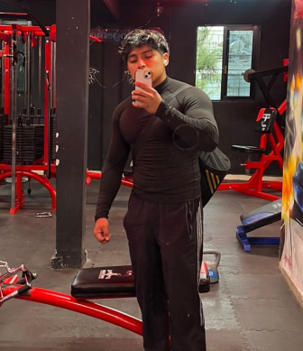

Roles del Equipo
Product Owner
Joan Enrique
Product OwnerEstudiante de sexto semestre en Ingeniería en Sistemas Computacionales. Cuento con la capacidad de estructurar y desarrollar código funcional, principalmente en Java, así como conocimientos básicos en otros lenguajes. Poseo fundamentos en el diseño de circuitos analógicos y digitales, utilizando herramientas de software como Quartus II y Proteus.
=======Joan Enrique
Product OwnerDescripción del integrante. Semestre, tecnologías favoritas, o cualquier dato relevante del equipo.
>>>>>>> mainScrum Master
Héctor Rogelio
Scrum MasterEstudiante de sexto semestre con interés en el desarrollo backend. Cuento con conocimientos en Java, HTML, CSS y fundamentos de bases de datos. Me gusta seguir aprendiendo de forma constante mediante cursos y, en mi tiempo libre, disfruto ir al gimnasio.
=======Héctor Rogelio
Scrum MasterDescripción del integrante. Semestre, tecnologías favoritas, o cualquier dato relevante del equipo.
>>>>>>> mainEquipo de Desarrollo
Ángel Gabriel
DesarrolladorEstudiante de sexto semestre, Me apasiona el desarrollo de software, la lógica digital y la ciberseguridad. Las tecnologías que más me interesan incluyen lenguajes como Java, Python, C++ y PHP, además de bases de datos con MySQL y diseño web con Materialize y CSS. También disfruto diseñar circuitos y usar herramientas como Quartus II o JavaFX. Fuera de la programación, mi pasatiempo es seguir la NBA y el fútbol europeo. Siempre busco nuevos retos. Puedes encontrarme en Instagram como ancat2356
Leonardo
DesarrolladorEstudiante de 6º semestre con conocimientos en Python, Java, C++, MySQL y PHP. Me interesa el desarrollo backend, el diseño y manejo de bases de datos, así como la electrónica, especialmente en circuitos físicos y digitales. Mis hobies son jugar futbol e ir al gym.
Carlos Alberto
DesarrolladorEstudiante de sexto semestre con interés en el desarrollo de software y la resolución de problemas mediante la programación. Me gusta aprender nuevas tecnologías y fortalecer mis habilidades en diferentes áreas de la informática. Entre las tecnologías que más me interesan se encuentran lenguajes como Java, Python y el desarrollo web con HTML, CSS y bases de datos.Fuera del ámbito académico, disfruto tocar covers con mi banda, practicar deporte ocasionalmente y visitar sitios turísticos o salir a comer con mi familia. Me considero una persona que busca seguir aprendiendo y mejorar constantemente tanto en lo profesional como en lo personal.

Paulo César
DesarrolladorEstudiante de sexto semestre con gran pasión por el desarrollo backend. Cuento con conocimientos en HTML, CSS, JavaScript, Java, C++, Python y bases de datos. Disfruto mantenerme activo y disciplinado, por lo que me encanta ir al gimnasio, así como ver fútbol en mi tiempo libre.
=======Paulo César
DesarrolladorDescripción del integrante. Semestre, tecnologías favoritas, o cualquier dato relevante del equipo.
>>>>>>> mainJorge Andrés
DesarrolladorDescripción del integrante. Semestre, tecnologías favoritas, o cualquier dato relevante del equipo.